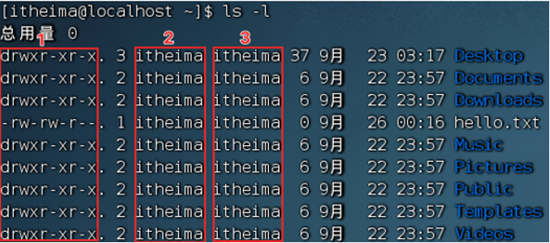
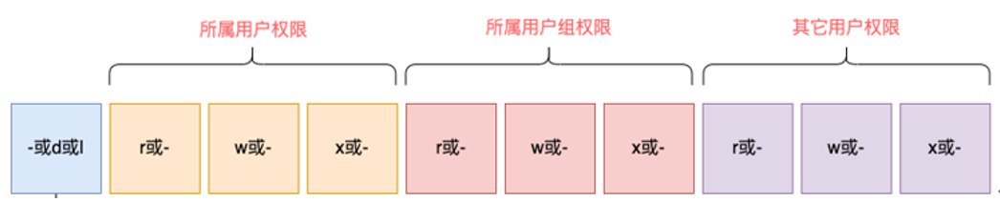
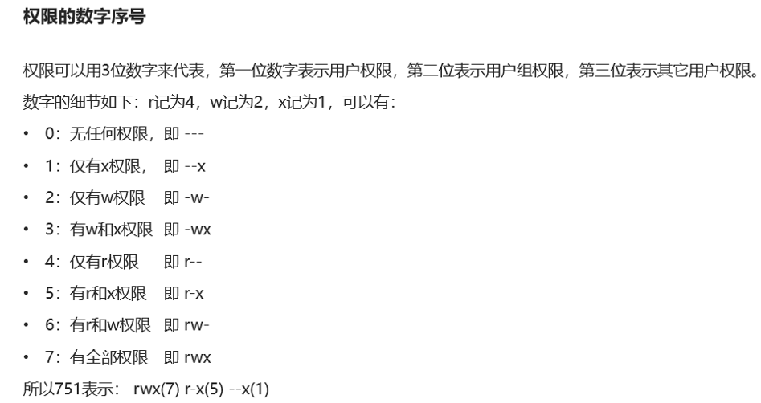

# Linux 用户和权限
# 3-1. su 用户切换命令 exit 用户退出命令
用户切换命令的语法：
su [-] [用户名]
其中：
- 可选，表示是否在切换用户后加载环境变量，建议带上。
用户名 可选，表示要切换到那个用户，如果不填则默认切换到 root 用户上。
用户退出命令： 直接输入 exit 即可退出当前用户。
注意：
在普通用户使用 su 切换到其他用户需要输入密码，且输入密码时，终端不会显示出来。
使用 root 切换用户时，无序输入密码，因为 root 拥有最高权限。
# 3-2. sudo 命令
我们使用 root 用户可以操作一切，但是不建议人人都使用 root，使用我们可以使用 sudo 命令使得当前用 户可以临时以 root 身份执行。
语法：
sudo 其他命令
其中：
其他命令必填。
但是并不是所有用户都可以使用 sudo，如果想让一个用户可以使用 sudo，则需要在 root 用户下，对普通 用户配置 sudo 认证。在 root 用户下执行 visudo 命令会打开一个文件，在文件中输入一些特定的内容即可。
输入内容： 要认证的用户名 ALL=(ALL) NOPASSWD: ALL
其中：
第一个填要认证的用户名
NOPASSWD: ALL 代表以后该用户使用 sudo 输入指令时，无需输入密码。
当我们完成编辑后输入 wq 保存即可。
# 3-3. 用户与用户组
linux 中可以配置多个用户或用户组，用户也可以假如多个用户组中。linux 对于权限的管理有：对于用户 的权限控制，对于用户组的权限管理。对于某个文件，可以控制用户对于这个文件的权限，也可以控制用户组 对于这个文件的权限。
创建用户组： groupadd 用户组名
删除用户组： groupdel 用户组名
创建用户命令的语法格式：
useradd [-g -d] 用户名
其中：
-g 指定用户的组，如果不写 - g 则会创建同名的用户组并且加入。如果写 - g 则对应的组要存在，同名组必 须使用 - g。
-d 指定用户的 home 路径，不写则用户的 home 默认在：/home/ 用户名
删除用户命令的语法格式：
userdel [-r] 用户名
其中：
-r 表示在删除用户的同时，也删除用户对应的 home 目录，如果不写则保留 home 目录。
查看用户的所属组命令的语法格式：
id [用户名]
修改用户所属组命令的语法格式：
usermod -aG 用户组 用户名
将用户加入指定的用户组。
# 3-4. 查看当前系统的用户组或者用户
查看当前系统的用户：
输入： getent passwd
每行显示一个用户信息。
用户信息：用户名 密码 用户 ID 组 ID 描述信息 HOME 目录 执行终端
查看当前系统的用户组:
输入： getent group
每行显示一个用户组信息。
用户组信息：组名称 组认证 组 ID
# 3-5. 查看 linux 的权限信息
可以通过 ls -l 来查看当前目录的文件或文件的权限信息。

上图中，1 表示选项信息，2 表示文件或者文件夹属于那个用户，3 表示文件或文件夹属于那个用户组。
权限的相关信息：

上图中第一个框框的信息：
- 表示文件
d 表示文件夹
l 表示软链接
上图剩下的 9 个框框以三个三个分成 3 个不同的部分，分别代表来自不同用户，用户组，其他用户对于该 文件或文件夹的操作。
r 代表可读权限
w 代表写权限
x 代表执行权限
- 代表无权限
# 3-6. chmod 权限修改命令 chown 所属用户 / 用户组修改命令
可以使用 chmod 命令，修改文件或文件夹的权限信息。并且只有该文件或文件夹所属的用户以及 root 用 户才可以修改。
语法格式：
chmod [-R] 权限 文件或文件夹
-R 表示对文件夹中的所有文件进行相同的权限修改操作。
例如：chmod u=rwx,g=x,o=r hello.txt 即可将文件权限修改为：rwx—xr--
其中：u 是用户权限 g 是用户组权限 o 是其他用户权限。注意权限顺序是 rwx
还有一种更为便捷的权限设置命令：chmod 742 test.txt

所属用户 / 用户组修改命令的语法格式（该命令只能被 root 用户执行）：
chown [-R] [用户] [:] [用户组] 文件或文件夹
其中：
-R 表示是否将文件夹中的其他文件或文件夹也执行相应的操作。
用户 表示修改所属用户
用户组 表示修改所属用户组
：用于分隔用户或用户组
例子：chown root test.txt 将文件 test.txt 的所属用户修改为 root’
例子：chown :acr test.txt 将文件 test.txt 的所属用户组修改为 acr’